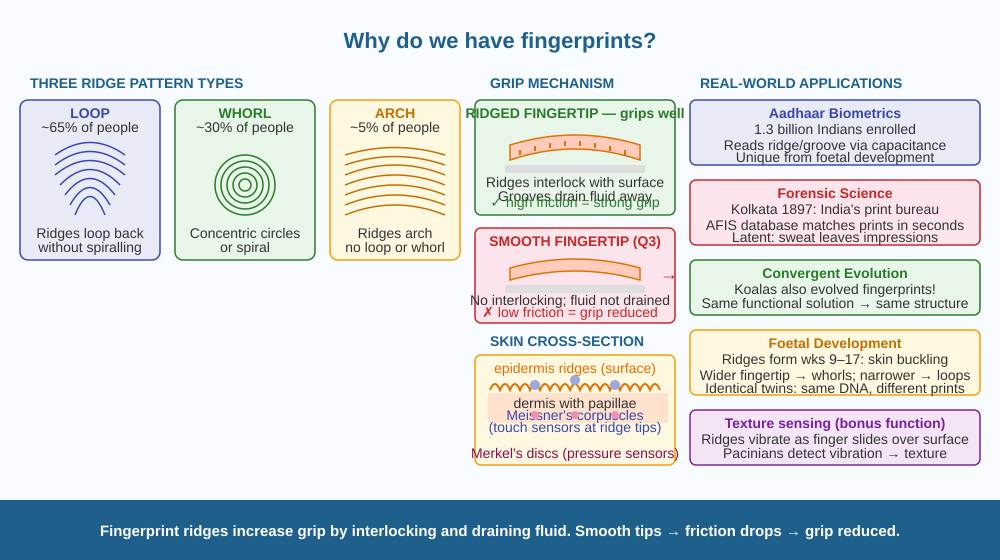

Discover why evolution gave us the unique ridge patterns on our fingertips — and understand exactly how those ridges improve our ability to grip, feel, and interact with the world.
Every person on Earth has fingerprints — and no two are exactly alike, not even identical twins. But why does the skin on your fingertips form ridges at all? Other skin on your body is smooth. Why would evolution produce this elaborate ridge pattern specifically on the contact surfaces of your fingers?
Fingerprints are the surface expression of dermal ridges — parallel rows of raised skin formed by the papillary layer of the dermis (the deeper skin layer). They appear on fingertips, palms, and the soles of feet. The ridges form in a specific pattern during foetal development (9–17 weeks after conception) and remain unchanged for life, unless destroyed by severe injury — in which case they grow back in the same pattern.
Primary function: friction and grip
The dermal ridges increase friction between the fingertip and a surface. Here's the mechanism:
Smooth fingertips would have lower coefficient of friction → objects would slip more easily. This directly explains Q3: smooth ridges would significantly reduce grip.
Secondary function: touch sensitivity
Dermal ridges amplify and transmit vibrations to Meissner's corpuscles (mechanoreceptors just below the ridge tips) and Merkel's discs (pressure receptors). The ridges act as amplifiers — like ridges on a vinyl record that translate a needle's vibration into sound. This allows us to feel very fine textures, detect slip before it happens, and adjust grip force accordingly.
Why each pattern is unique:
The ridge pattern depends on random mechanical stresses in the developing foetal skin during weeks 9–17. Even identical twins (same DNA) develop different patterns because the exact mechanical environment inside the womb differs slightly. The pattern is a complex interaction of genetics (general ridge density) and local physical conditions during development. This uniqueness is why fingerprints are used in forensics and biometric identification.
What determines the three main types: - Loops (~60–65% of people): ridges loop back - Whorls (~30–35%): ridges form concentric circles - Arches (~5%): ridges form arches without looping back
Think of the ridged fingertip as a car tyre compared to a bald tyre. The ridged tyre grips the road better by maximising contact area and channelling away water. The ridges on your fingertip do the same — they maximise grip by mechanical interlocking and keep the contact dry. The pattern uniqueness is like a tyre mould that was poured under slightly different conditions each time — same factory, different micro-random outcomes.

The diagram shows three panels. Left: Cross-section of fingertip skin — epidermis ridges on surface, dermal papillae below, Meissner's corpuscles shown at ridge tips, Merkel's discs at ridge bases, sweat gland openings along ridge tops. Centre: Grip comparison — ridged fingertip gripping a glass (large contact area arrows), smooth fingertip (small contact area, slip arrow). Right: The three fingerprint pattern types — loop, whorl, arch — each shown as a top-view ridge map. Bottom: Forensic fingerprint lift diagram — inked ridge impression on a glass surface.
Press your fingertip firmly onto an ink stamp pad (or rub a pencil on paper and rub your finger over it). Press the fingertip onto white paper. Look at the print under a magnifying glass if available. Identify whether your pattern is a loop, whorl, or arch. Check if any two fingers have the same pattern. Then wet your finger and try to lift a smooth plastic cup — compare the grip to a dry finger grip. You are experiencing the difference in friction coefficient directly.
Researchers have proposed a second reason for fingerprint ridges: they improve the sensitivity of vibration detection by acting as resonators. When a finger slides over a surface, the ridges vibrate at specific frequencies depending on the texture — these vibrations are detected by Pacinian corpuscles (deep pressure receptors that respond to vibration). This would mean fingerprints serve two purposes simultaneously: grip and texture sensing. How would you design an experiment to test whether ridges improve touch sensitivity — specifically, whether people with deeper ridges can feel finer textures? What would you measure and how?
What is the primary function of fingerprint ridges on human skin?
Why is understanding why fingerprints exist more useful than just describing their patterns?
If fingerprint ridges were completely smooth, what would you predict?
A robotics team is designing an artificial finger for a robot that must grip wet and dry objects with precision. (a) Should they use a smooth rubber tip or a ridged rubber tip? Justify your answer using the mechanisms of friction described in the lesson. (b) The ridges on a human fingertip are about 0.4 mm apart. Would you make the robot ridges wider, narrower, or the same, for gripping larger objects? (c) Meissner's corpuscles give feedback about slip — the robot has no nerves. How could you replace this function with a sensor?
Fingerprints do not appear on the first ultrasound images of a foetus. They form between weeks 9 and 17 as a kind of buckling pattern in the skin — similar to how a drying gel develops cracks, or how soil cracks in drought. The pattern is partly determined by the shape of the fingertip at that moment — a wider, rounder fingertip produces more whorls; a narrower fingertip produces more loops. The ridges are essentially a buckling instability in the developing skin, guided by the fingertip's geometry, but randomised by local molecular noise. Your fingerprint is a record of the exact shape of your fingertips in the 9th week of your existence.
Fingerprints = dermal ridges that increase friction by maximising contact area and draining fluid. Ridges also amplify vibrations for touch sensing. Unique patterns form from random mechanical stresses in foetal development. Smooth ridges → significantly reduced grip.